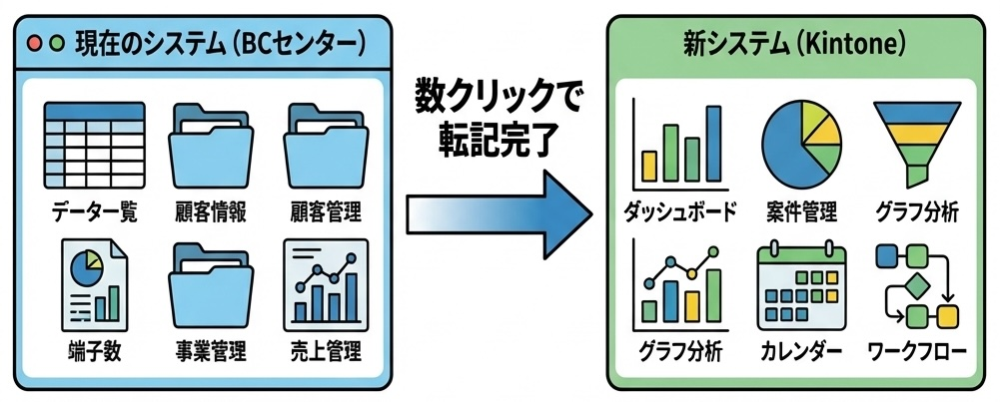

4. 具体的な項目（何を入力するの？）
Phase 1: まずはここからスタート！
皆さんに現場で入れてほしいのは、『お客様のやる気スイッチ（動機）』 と 『プロとしての評価（レベル判定）』です。
最初は、これだけしっかり入力できれば100点満点です。
| 項目名 |
担当 |
内容・備考 |
| BCセンター会員番号 |
事務 |
(BC重複) 連携のためのキー情報。 |
| お名前・連絡先 |
事務 |
(BC重複) 氏名、カナ、電話、PCメールアドレス。（個人情報なので最小限に） |
| 体験者情報 |
事務 |
(BC重複) 年代、希望日時、希望レベル、テニス経験 |
| 問合せ日 |
事務 |
(BC重複) 体験希望日との間隔（リードタイム）を分析するために必要。 |
| 参加したクラス |
事務 |
実際に体験したクラス（曜日・時間・担当コーチ）。 |
| キャンペーン |
事務 |
どのチラシ・Web広告で来たか（BCにはない重要情報！）。 |
| 郵便番号 |
事務 |
7桁番号。商圏分析用（BCに入っていない場合のみ入力）。 |
| 入会目的 |
事務 |
「仲間作り」「健康」など（BCの備考欄より詳しく）。 |
| 真の動機（本音） |
どちらでも |
「会社や家以外に居場所が欲しい」「子供を預けて自由になりたい」などのインサイト。
ここが分かるとクロージングが変わります。 |
| スキル評価 |
コーチ |
5段階評価（フォア・バック等）。 |
| コーチFB |
コーチ |
「ここが良かった！」という褒め言葉。フロントが入会をお勧めする時の材料になります。 |
| おすすめクラス |
コーチ |
プロ目線での推奨クラス。 |
| 結果 |
事務 |
入会/見送り結果（即決、検討、辞退など）。 |
| 見送り理由 |
事務 |
入会しなかった場合のボトルネック（料金、時間など）。 |
| 次のアクション |
事務 |
「3日後に電話」などの追客予定。システムがリマインドします。 |
Phase 2以降: 慣れてきたらステップアップ
もっと良いスクールにするために、将来はこんなことも見ていきます。
| 項目名 |
内容 |
| NPSスコア |
「このスクールを友だちに勧めたいですか？」というアンケート。 |
| 出席率 |
「最近あまり来れてないな...」という生徒さんに気づくため。 |
| これからの在籍期間 |
その生徒さんがどれくらい長く通ってくれているか。 |
| 次の目標 (Next Goal) |
生徒さんが飽きてしまわないよう、「次はここを目指しましょう！」という目標設定。 |
5. データ活用による改善イメージ (251218 提案)
0. プロジェクトの全体コンセプト
| フェーズ |
視点とアプローチ |
目的 |
ステータス |
| Phase 1 |
データ分析（現状把握）
「まずはデータを溜めて、傾向（事実）を知る」 |
Excel文化からの脱却
現状の見える化・効率化 |
今回の実装範囲 |
| Phase 2 |
クロージング戦略（理想逆算）
「あるべき『理想の成約プロセス』から逆算する」 |
成約率の最大化
営業プロセスの標準化 |
次期ステップ |
1. Phase 1 で実現するデータ活用
まず最初に実現すべき、経営・現場へのインパクトが大きい活用例です。
① リアルタイム状況共有と集計レス ※最重要
「Excel管理に比べてデータ集計の手間がなくなる。本部から体験入会の状況がリアルタイムでわかる。」
② 媒体別・入会コスト分析（CPA） ※重要度：高
「どのチラシが『入会する人』を連れてきたか？」が見える
問い合わせ数だけでなく、「本当に入会した人」獲得にかかったコストを算出します。
活用: 「チラシBは高反応」「Web広告はコスパ良し」など、無駄のない予算配分が可能になります。
③ 地理 × 媒体クロス分析（商圏の見える化）
「どの地域の人が、どのチラシを見て来たか？」
郵便番号データと媒体データを組み合わせることで、地域特性を可視化します。
活用: 「A地区にはチラシBが効く」といった傾向を掴み、配布エリアを最適化（無駄打ちエリアの削減）します。
④ スタッフ教育への活用（メモの質）
「このスタッフはどんなヒアリングをしているか？」
成約率の高いスタッフが「ヒアリングメモ」に何を書いているか（何を重要視しているか）を分析します。
活用: 優秀なスタッフのメモを「新人研修の教材」として使い、接客レベルの底上げを図ります。
2. 実装項目リスト (全量)
データの移行は、ブラウザコピー機能（専用ブックマークレット）を使います。
BCセンターの画面でボタンを1回押すだけで、クリップボード経由でKintoneに貼り付け可能です（数クリックで完了）。

A. 自動転記される項目 (BCセンター → Kintone)
※「BC問合せ内容」は、複数のアンケート項目を自動でテキスト化してまとめたものです。
| No. |
BCセンター項目名 |
転記先のKintoneフィールド |
備考 |
| 1 |
氏名 |
氏名 |
|
| 2 |
ふりがな |
氏名・カナ |
|
| 3 |
電話番号 |
携帯番号 |
|
| 4 |
緊急連絡先 |
BC問合せ内容 |
(自動集約) |
| 5 |
メールアドレス |
メールアドレス |
|
| 6 |
性別 |
BC問合せ内容 |
(自動集約) |
| 7 |
郵便番号 |
郵便番号 |
|
| 8 |
都道府県・住所 |
住所 |
|
| 9 |
交通機関 |
BC問合せ内容 |
(自動集約) |
| 10 |
所要時間 |
BC問合せ内容 |
(自動集約) |
| 11 |
通う目的 |
BC問合せ内容 |
(自動集約) 「ダイエット」「技術向上」など |
| 12 |
きっかけ(媒体) |
BC問合せ内容 |
(自動集約) ※分析用には別途手入力推奨 |
| 13 |
チラシ閲覧 |
BC問合せ内容 |
(自動集約) |
| 14 |
HP閲覧 |
BC問合せ内容 |
(自動集約) |
| 15 |
検索ワード |
BC問合せ内容 |
(自動集約) SEO対策に活用 |
| 16 |
通いやすい曜日/時間 |
BC問合せ内容 |
(自動集約) |
| 17 |
レッスンへの要望 |
BC問合せ内容 |
(自動集約) |
B. スタッフが手入力する項目 (Phase 1 必須)
| No. |
項目名 |
担当 |
活用目的 |
| 1 |
キャンペーン(媒体) |
事務 |
CPA分析用。チラシ/Web/紹介などを選択肢から選ぶ。 |
| 2 |
参加クラス/担当 |
事務 |
人気クラス・コーチの分析。 |
| 3 |
ヒアリングメモ |
事務 |
お客様の背景情報や会話のログ。 |
| 4 |
結果 |
事務 |
入会 / 検討中 / 未入会 / 退会 のステータス。 |
| 5 |
見送り理由 |
事務 |
ボトルネック分析。料金、時間、距離など。 |
| 6 |
次のアクション |
事務 |
追客漏れ防止のリマインダー。 |
C. Phase 2 以降で追加検討する項目 (クロージング向上)
Phase 2 では、「成約率向上」に加えて「LTV（顧客生涯価値）向上」の視点も取り入れます。
① クロージング率向上（契約を勝ち取る）
| No. |
項目名 |
担当 |
活用目的 |
| 1 |
真の動機(インサイト) |
手入力 |
表面的な目的の奥にある本音（リフレッシュ、孤独解消etc） |
| 2 |
決定権者 |
手入力 |
クロージング戦略用（パパブロック対策など） |
| 3 |
比較・併用サービス |
手入力 |
競合対策用 |
② LTV向上（長く続けてもらう）
| No. |
項目名 |
内容 |
活用目的 |
| 1 |
NPSスコア |
「このスクールを友だちに勧めたいですか？」 |
顧客満足度を数値化し、改善サイクルを回す。 |
| 2 |
出席率 |
直近3ヶ月の出席状況 |
「最近来れていない」生徒を早期発見し、退会を防ぐ。 |
| 3 |
これからの在籍期間 |
予測される継続期間 |
生徒ごとの収益性を予測し、フォローの手厚さを変える。 |
| 4 |
次の目標 (Next Goal) |
「次はここを目指しましょう！」 |
飽き防止とモチベーション維持のための目標設定。 |
3. Phase 2 で実現するデータ活用（未来の姿）
Phase
2（項目を追加した後のステップ）では、「攻めの営業（クロージング）」と「守りの改善（LTV）」の両面で、より踏み込んだ以下のようなデータ活用が可能になります。
A. 成約率を上げる（クロージング戦略）
Phase 2で追加する「決裁権者」「真の動機」などを使うと、こんな戦術が立てられます。
-
「パパブロック」対策（決裁権者）
分析: 「即決しなかった人」の多くが「妻が体験、夫が決定権者」だと判明。
アクション: 奥様向け資料だけでなく、「旦那様説得用（健康診断の数値改善データなど）」のチラシを用意し、持ち帰らせてブロックを防ぐ。
-
競合キラー・トークへの活用（比較サービス）
分析: 「スポーツジム」と比較して悩む人が多い。
アクション: 入会案内時に「ジムは孤独になりがちですが、テニスは仲間ができて続きやすいですよ（継続率データ提示）」と、ジムの弱点を突くトークを標準化する。
B. 生徒に長く続けてもらう（LTV向上）
「NPS」や「出席率」を使うと、退会を未然に防げます。
-
退会予兆アラート（出席率）
分析: 「2週間連続で欠席した生徒」は、その翌月に退会する確率が80%高い。
アクション: 2週間来なかった時点でシステムがアラートを出し、担当コーチから「最近お忙しいですか？またお待ちしてますね」とLINEを一通送るだけで、退会率を改善する。
-
「ファン度」の可視化（NPSスコア）
分析: アンケートで「友人に勧めたい」と答えた人は、実際に翌年「紹介」で新規顧客を連れてくる。
アクション: スコアが高い会員様だけに限定して「お友達紹介キャンペーン」の案内を送り、効率よく紹介入会を増やす。
このように、Phase 1 が「現状の見える化」なのに対し、Phase 2
は「具体的な売上アップ・退会阻止のアクション」に直結する活用が中心になります。